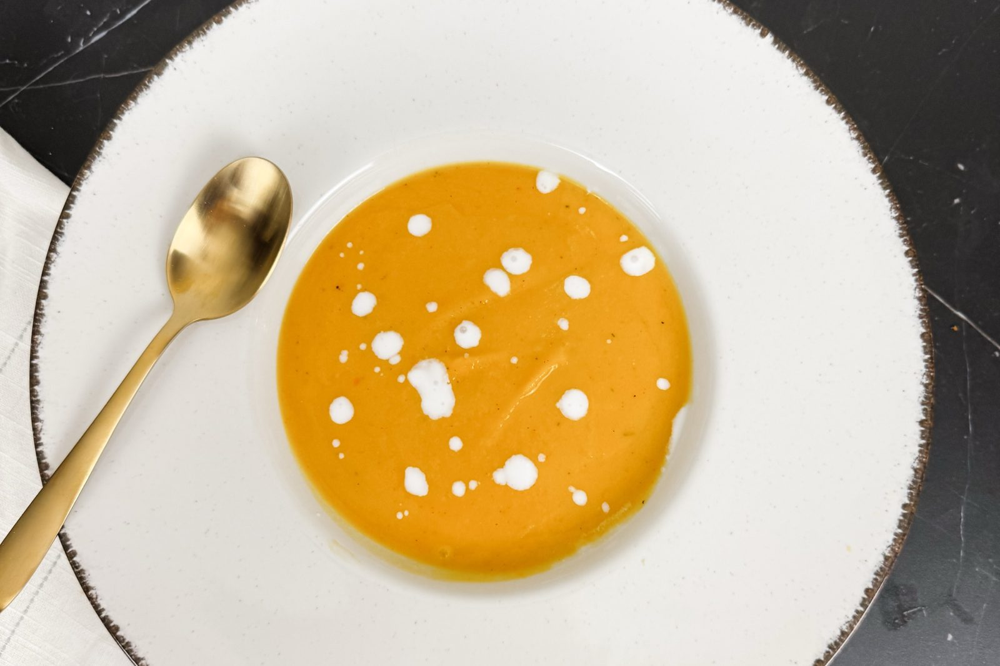

She’s the Goose

Suppers · Autumn
Honeynut and butternut squash roasted with apple, carrots and garlic, then blended smooth with coconut milk. Deep orange, gently sweet and silky.
Everything goes onto one sheet pan and roasts for an hour, so the oven does most of the work. Blend, warm it through on the stove, and finish each bowl with a few drops of coconut milk.
For the roasting pan
For the soup
Season the vegetables. Heat the oven to 350°F and line a large sheet pan with foil. Arrange the squash, apple, carrots, zucchini, onion and garlic in a single layer. Drizzle with the olive oil and sprinkle evenly with the salt, pepper, thyme, cinnamon and nutmeg.
Roast. Roast for 1 hour, until everything is completely tender and the squash is soft all the way through.
Blend. Squeeze the roasted garlic cloves out of their skins. Purée the garlic with the rest of the roasted vegetables until completely smooth, adding a splash of the broth if the blender needs help.
Finish on the stove. Transfer the purée to a pot over medium heat. Stir in the coconut milk and vegetable broth and heat through. Taste and adjust the salt.
Serve. Ladle into bowls and finish each with a few drops of coconut milk.
Cinnamon and nutmeg build quickly in a smooth soup, so the amounts here are deliberately modest. Taste at the end and add a pinch more if you like.
Peeling the squash before roasting means there is nothing to scoop out afterward; everything on the pan goes straight into the blender.